Home
Multi-Region Fabric (MRF) Overview
The current Catalyst SDWAN architecture follows a flat overlay model, establishing site-to-site tunnels directly between sites. While this flat overlay model functions adequately in many scenarios, it does have its limitations:
- Centralized control policy is necessary for Hub and Spoke topology or setting route preferences. Depending on the specific requirements of the topology, this policy can become quite complex.
- Integrating transports from disparate providers for the underlay can be challenging. This is particularly relevant when attempting to leverage middle mile providers or cloud backbone providers' networks for inter-region traffic.
- Large enterprises and managed service providers (MSPs) often require SDWAN to extend across multiple regions.
Now, with Multi-Region Fabric (MRF), it offers following enhancements
- Foundational capability that underpins our journey to multi-cloud and SDCI
- Ensure market-leading scalability
- Service enablement at gateway points
- Increase network resiliency
- Improve OMP to support a true scalable Multi-Region Fabric SD-WAN
- 3-level customer overlay
- Introduces Regions
- Primary Access Region
- Secondary Region
- Subregion
- Border routers provide tunnel stitching
- Inter Regions always goes via border routers
- End to end SLA aware path computation
- Simplifies user-visible configuration
About This Lab
This lab has been designed to showcase a comprehensive array of MRF features provided by the Cisco SD-WAN solution in a systematic manner. While a predefined topology is outlined and associated with each scenario, the lab instructions can also be tailored to the specific requirements of attendees. Participants can utilize the steps outlined in this lab to transition their flat fabric into an MRF.
Upon completing this lab, you will:
- Gain insight into the intricacies of using the legacy approach to create and deploy hierarchical topologies within a flat Catalyst SD-WAN Fabric.
- Successfully migrate from a flat Catalyst SD-WAN fabric to an MRF fabric with minimal disruption.
- Understand the streamlined process for deploying a hierarchical topology using MRF fabric.
- Understand and deploy MRF features such as 2nd region, transit gateway and MRF policy.
Network topology used in this lab are shown in below picture:
- Regional Hub & Spoke with BGP core
- Multi-Region (MRF) SD-WAN Fanric
Below table provides the IP addresses and credentials for the devices used in this lab:
- UI Connection Details
| Node | IP:Port | Username | Password |
|---|---|---|---|
| Manager | https://vmanage.dcloud.cisco.com:8443 | admin | C1sco12345 |
- SD-WAN Controllers
| Hostname | System IP | Site ID | Username | Password |
|---|---|---|---|---|
| Manager-1 | 1.1.1.1 | 1 | admin | C1sco12345 |
| Validator-1 | 1.1.1.2 | 1 | admin | C1sco12345 |
| Controller-1 | 1.1.1.3 | 1 | admin | C1sco12345 |
| Controller-2 | 1.1.1.4 | 1 | admin | C1sco12345 |
| Controller-3 | 1.1.1.5 | 1 | admin | C1sco12345 |
| Controller-4 | 1.1.1.6 | 1 | admin | C1sco12345 |
- SD-WAN Edges
| Hostname | System IP | Site ID | Username | Password |
|---|---|---|---|---|
| BR-WEST-1 | 1.1.201.1 | 201 | admin | C1sco12345 |
| BR-WEST-2 | 1.1.201.2 | 201 | admin | C1sco12345 |
| BR-EAST-1 | 1.1.202.1 | 202 | admin | C1sco12345 |
| BR-EAST-2 | 1.1.202.2 | 202 | admin | C1sco12345 |
| EDGE-HUB-1-01 | 1.1.10.1 | 1010 | admin | C1sco12345 |
| EDGE-HUB-1-02 | 1.1.10.2 | 1010 | admin | C1sco12345 |
| EDGE-HUB-2-01 | 1.1.20.1 | 1020 | admin | C1sco12345 |
| EDGE-HUB-2-02 | 1.1.20.2 | 1020 | admin | C1sco12345 |
| EDGE-BRANCH-3-01 | 1.1.30.1 | 3000 | admin | C1sco12345 |
| EDGE-BRANCH-4-01 | 1.1.40.1 | 4000 | admin | C1sco12345 |
| EDGE-BRANCH-4-02 | 1.1.40.2 | 4000 | admin | C1sco12345 |
| EDGE-BRANCH-5-01 | 1.1.50.1 | 5000 | admin | C1sco12345 |
| EDGE-BRANCH-6-01 | 1.1.60.1 | 6000 | admin | C1sco12345 |
| EDGE-BRANCH-7-01 | 1.1.70.1 | 7000 | admin | admin |
- SD-WAN Edges - Interfaces
| Hostname | Pub-Inet TLOC If | Pub-Inet IP Address | MPLS TLOC If | MPLS IP Address | Private1 TLOC If | Private1 IP Address | Private2 TLOC If | Private2 IP Address |
|---|---|---|---|---|---|---|---|---|
| BR-WEST-1 | Gi2 | 124.124.124.2/24 | Gi1 | 10.2.1.2/24 | Gi3 | 172.16.1.1/24 | Gi4 | 172.16.2.1/24 |
| BR-WEST-2 | Gi2 | 125.125.125.2/24 | Gi1 | 10.2.2.2/24 | Gi3 | 172.16.1.2/24 | Gi4 | 172.16.2.2/24 |
| BR-EAST-1 | Gi2 | 131.131.131/2/24 | Gi1 | 10.2.3.1/24 | Gi3 | 172.16.1.3/24 | Gi4 | 172.16.2.3/24 |
| BR-EAST-2 | Gi2 | 132.132.132.2/24 | Gi1 | 10.2.4.1/24 | Gi3 | 172.16.1.4/24 | Gi4 | 172.16.2.4/24 |
| Hostname | Pub-Inet TLOC If | Pub-Inet IP Address | MPLS TLOC If | MPLS IP Address | SVPN 10 If | SVPN 10 IP Address | SVPN 11 If | SVPN 11 IP Address |
|---|---|---|---|---|---|---|---|---|
| EDGE-DC-1-01 | Gi1 | 126.126.126.2/24 | Gi2 | 10.2.5.1/24 | Gi3 | 10.10.1.1/24 | Gi4 | 10.11.1.1/24 |
| EDGE-DC-1-02 | Gi1 | 128.128.128.2/24 | Gi2 | 10.2.6.2/24 | Gi3 | 10.10.1.2/24 | Gi4 | 10.11.1.2/24 |
| EDGE-DC-2-01 | Gi1 | 129.129.129.2/24 | Gi2 | 10.2.7.2/24 | Gi3 | 10.20.1.1/24 | Gi4 | 10.21.1.1/24 |
| EDGE-DC-2-02 | Gi1 | 130.130.130.2/24 | Gi2 | 10.2.8.2/24 | Gi3 | 10.20.1.2/24 | Gi4 | 10.21.1.2/24 |
| EDGE-BRANCH-3-01 | Gi1 | 133.133.133.2/24 | Gi2 | 10.2.9.2/24 | Gi3 | 10.30.1.1/24 | Gi4 | 10.31.1.1/24 |
| EDGE-BRANCH-4-01 | Gi1 | 144.144.144.2/24 | Gi2 | 10.2.10.130/25 | Gi3 | 10.40.1.1/24 | Gi4 | 10.41.1.1/24 |
| EDGE-BRANCH-4-02 | Gi1 | 192.168.0.2/24 | Gi2 | 10.2.10.2/25 | Gi3 | 10.40.1.2/24 | Gi4 | 10.41.1.2/24 |
| EDGE-BRANCH-5-01 | Gi1 | 145.145.145.2/24 | Gi2 | 10.2.11.2/24 | Gi3 | 10.50.1.129/25 | Gi4 | 10.51.1.129/25 |
| EDGE-BRANCH-6-01 | Gi1 | 146.146.146.2/24 | N/A | N/A | Gi2 | 10.60.1.1/24 | Gi3 | 10.61.1.1/24 |
| EDGE-BRANCH-7-01 | N/A | N/A | Gi1 | 10.2.12.2/24 | Gi2 | 10.70.1.129/25 | Gi3 | 10.71.1.129/25 |
Lab Guide ↵
Task 1 - Explore Flat Fabric Policy
Tips For The Lab
Use your browser Zoom In option to visualize better all images.

Rediscovery Fabric Network to ensure all virtual nodes are reachable. Please inform the speaker if any virtual device appear as un-reachable.
Go to Tools > Rediscovery Network, mark all the device checkboxes and click 'Rediscover'.

In this task you will review and understand the current active centralized policy that creates a Regional Hub & Spoke topology. By default, SD-WAN solution builds a full mesh topology, any site will build tunnel with any other site. To build hub and spoke topology, or build regional hierarchy like we have in the lab, a centralized control policy is required.
Step 1: Review existing policy
Once you have the RDP session to the remote workstation, open Chrome browser icon on the desktop.
-
Enter https://vmanage.dcloud.cisco.com:8443 in browser address bar; login with username admin, password C1sco12345.
-
Click SD-WAN Manager navagination bar, go to Configuration > Policies. Locate pre-configured policy REGIONAL_HUB_AND_SPOKE_BGP_CORE_POLICY, click the ... on the right and select Preview.

- This REGIONAL_HUB_AND_SPOKE_BGP_CORE_POLICY adjusts the control plane to allow full-mesh intercommunication among all sites within the West region (Site ID 201,1010,1020,3000,4000,5000) while preventing direct connectivity to the East region. This is achieved by denying TLOCs and utilizing TLOC re-writes. The West Hub (Site 201) connects to the East Hub (Site 202) through the BGP core network using the service-side VPN.
Note
Refer to the Regional Hub & Spoke with BGP Core topology diagram for further analysis.
- As you can see it is a complex policy even for a very small environment with same two transports used everywhere.
viptela-policy:policy
control-policy EAST-BRANCHES-SITES-CP
sequence 1
match tloc
site-list EAST-ALL-SITES
!
action accept
!
!
sequence 11
match route
site-list EAST-ALL-SITES
prefix-list _AnyIpv4PrefixList
!
action accept
!
!
sequence 21
match route
site-list WEST-ALL-SITES
prefix-list _AnyIpv4PrefixList
!
action accept
set
tloc-list EAST-HUB-TLOCS
!
!
!
default-action reject
!
control-policy BGP-CORE-EAST-HUB-CP
sequence 1
match tloc
site-list EAST-ALL-SITES
!
action accept
!
!
sequence 11
match route
site-list EAST-ALL-SITES
prefix-list _AnyIpv4PrefixList
!
action accept
!
!
default-action reject
!
control-policy BGP-CORE-WEST-HUB-CP
sequence 1
match tloc
site-list WEST-ALL-SITES
!
action accept
!
!
sequence 11
match route
site-list WEST-ALL-SITES
prefix-list _AnyIpv4PrefixList
!
action accept
!
!
default-action reject
!
control-policy WEST-BRANCHES-SITES-CP
sequence 1
match tloc
site-list WEST-ALL-SITES
!
action accept
!
!
sequence 11
match route
site-list WEST-ALL-SITES
prefix-list _AnyIpv4PrefixList
!
action accept
!
!
sequence 21
match route
site-list EAST-ALL-SITES
prefix-list _AnyIpv4PrefixList
!
action accept
set
tloc-list WEST-HUB-TLOCS
!
!
!
default-action reject
!
lists
site-list EAST-ALL-SITES
site-id 202
site-id 6000-7000
!
site-list EAST-BRANCHES
site-id 6000
site-id 7000
!
site-list EAST-HUB
site-id 202
!
site-list WEST-ALL-SITES
site-id 201
site-id 1010-1020
site-id 3000-5000
!
site-list WEST-BRANCHES
site-id 1010-1020
site-id 3000
site-id 4000
site-id 5000
!
site-list WEST-HUB
site-id 201
!
tloc-list EAST-HUB-TLOCS
tloc 1.1.202.1 color public-internet encap ipsec
tloc 1.1.202.1 color mpls encap ipsec
tloc 1.1.202.2 color public-internet encap ipsec
tloc 1.1.202.2 color mpls encap ipsec
!
tloc-list WEST-HUB-TLOCS
tloc 1.1.201.1 color public-internet encap ipsec
tloc 1.1.201.1 color mpls encap ipsec
tloc 1.1.201.2 color public-internet encap ipsec
tloc 1.1.201.2 color mpls encap ipsec
!
prefix-list _AnyIpv4PrefixList
ip-prefix 0.0.0.0/0 le 32
!
!
!
apply-policy
site-list WEST-BRANCHES
control-policy WEST-BRANCHES-SITES-CP out
!
site-list EAST-BRANCHES
control-policy EAST-BRANCHES-SITES-CP out
!
site-list EAST-HUB
control-policy BGP-CORE-EAST-HUB-CP out
!
site-list WEST-HUB
control-policy BGP-CORE-WEST-HUB-CP out
!
!
Step 2: Review BFD Tunnels
Next, you'll examine the BFD tunnels from the spoke sites. A spoke site in west region, site 5000 will not have BFD tunnel to spoke sites in east region, such as site 6000, and site 7000.
You can either utilize the Manager Real Time UI option to confirm TLOCs and BFD sessions, or opt to SSH into the WAN Edges and execute command lines via an SSH terminal.
For SSH access, you can leverage mRemoteNG  on your desktop.
on your desktop.
-
From the SD-WAN Manager navagination bar, click Monitor > Device. Locate EDGE-BRANCH-3-01, click on the device and choose Real Time as shown in the screenshot below.
-
In the Device Options field, enter OMP Received TLOCS. As you can see, there are no TLOCs to any site in the East region and therefore no tunnels to any sites in the East region either.

- We can confirm this by looking for BFD Sessions in the Device Options field.
We don’t see East TLOC’s IPs like 1.1.60.1, 1.1.70.1, 1.1.202.1 or 1.1.202.2 nor BFD tunnels against their Site IDs 202,6000 and 7000

Step 3: Review IP Route
Next, you'll examine the route tables from the spoke sites. A spoke site in west region (site 3000, 4000, 5000) doesn't have direct tunnel to spoke site in east region (site 6000,7000), but it learns east region spokes' prefixes with next hop pointing to west hubs (site 201).
- In the Device Options field, enter IP route.
- As you can see, even though it doesn't have tunnels towards the East sites, it has prefixes for such sites but pointing to the West Hubs (Site 201) TLOCs IPs instead of the originators.
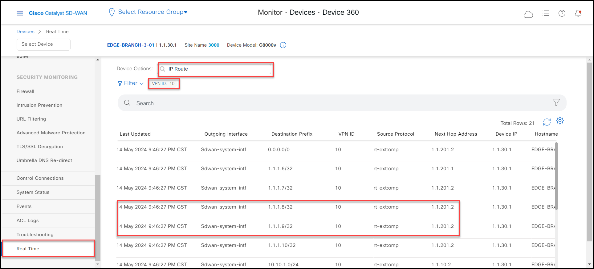

Step 4: Review Path between spoke sites
To confirm the path for communication between spokes in different regions. Run traceroute and ping to test reachability of ubuntu hosts between branch sites in different regions.
- Click mRemoteNG on your desktop, select Site-3000-VPN-10-Ubun and open RDP session to the host with password C1sco12345. Run ping and traceroute to Ubuntu host in Site 6000 with IP 10.60.1.101.
Note
Leave this ping running to identify any discruption during the migration in the incoming takss.

-
From the trace above, even though site 3000 and site 6000 have the Public-Internet transport in common, they do not communicate directly to each other.
That is because the active Control Policy forces traffic going through the Hubs and then the BGP Core as highlighted in red in the trace. -
Next, let's check the route table on West hub site BR-WEST-1. Go to the Manager GUI and then go to Monitor > Devices > BR-WEST-1 (1.1.201.1) > Real Time and look up for IP route with the VPN 10 filter.


- As you see from the route table, the prefixes from East Regions are learned from BGP core.
Task 2 - Prepare MRF Migration
In this task, you will perform the following prerequisites before migrating from flat SD-WAN fabric to MRF.
- Enable MRF
- Creat regions
- Provision Controllers for regions
Step 1: Enable MRF
In this step, you will enable MRF on vManage.
Info
The MRF feature has been pre-enabled for this lab. This section is for your review of the workflow
- Click SD-WAN Manager navagination bar, go to Administration > Settings. and confirm that the Multi-Region Fabric setting is enabled (By default is disabled).
Step 2: Create Regions
After enabling MRF, the subsequent step involves creating the regions.
For this lab, we'll establish two regions: EAST-REGION and WEST-REGION. Upon creation, the system automatically assigns a Region ID.
In this lab, WEST-REGION has been assigned with Region ID 1, and EAST-REGION has been assigned Region ID 2.
Info
The Regioins has been pre-enabled for this lab. This section is for your review of the workflow
- Go to Configuration > Network Hierarchy and you should see that the EAST-REGION and WEST-REGION have been pre-configured.

Step 3: Provision Controllers for Regions
In MRF, vSmart controller is assigned to specific region. Based on the size of the deployment, the vSmart controller can be dedicated for a region or for a group of regions. For this lab, you will have controllers assigned as shown below:
- Controller-1 (1.1.1.3) as dedicated Controller for WEST-REGION (1).
- Controller-2 (1.1.1.4) as dedicated Controller for EAST-REGION (2).
- Controller-3 (1.1.1.5) as dedicated Controller for the Core Region (0).
- Controller-4 (1.1.1.6) is the default/flat existing Controller serving the whole overlay.
Info
The controllers have been pre-configured for this lab. This section is for your review of the workflow
-
The controller is assigned to the region by configuring Region ID List on controller System feature template.
-
Go to Configuration > Template > Feature Templates, type SYSTEM_FT in the seach field, and you will see 4 pre-configured Controllers feature templates, one for each controller.
-
Click the Devices Attached of each controller system ft, you will see the controllers are attached to the feature templates as planned.
- CONTROLLER-1_SYSTEM_FT for Controller-1 (1.1.1.3)
- CONTROLLER-2_SYSTEM_FT for Controller-1 (1.1.1.4)
- CONTROLLER-3_SYSTEM_FT for Controller-1 (1.1.1.5)
- CONTROLLER-4_SYSTEM_FT for Controller-1 (1.1.1.6)
-
Click the ... to view each of the controller system feature template.
CONTROLLER-1_SYSTEM_FT
CONTROLLER-2_SYSTEM_FT

CONTROLLER-3_SYSTEM_FT

CONTROLLER-4_SYSTEM_FT

-
After assigning distributed controllers for regions, all WAN Edges in the overlay remain un-assigned to any region, with **Controller-4(1.1.1.6) serving as the default controller for the entire overlay. You can verify that by checking the controller control connections of all WAN Edges.
-
Go to Monitor > Devices and look the vSmart Control column.

Info
If output shows 0 control connection, please perform Rediscovery Network to show the correct outputs.
- You can also verify this by going to Monitor > Devices; select a device and then look up for OMP peers with the Real Time function.
For instance, EDGE-BRANCH-3-01 shows only one OMP peer with Controller-4 showing Region ID as None.
Task 3 - Enable Migration Mode on Edge Routers
Enabling Migration Mode allows WAN Edges to participate in regional controllers while maintaining their current OMP peers with the default controllers. This must be enabled on all WAN Edges before the MRF migration.
In this task, you will enable Migration Mode on all Edge Routers for Site 1010, Site 1020, Site 3000, Site 4000, Site 5000, Site 6000, and Site 7000. In the next task, you will enable Migration Mode on all Border Routers.
Step 1: Create new Systen Feature Template for West Edge Devices
- Go to Configuration > Templates > Feature templates > Add Template, select C8000v and Cisco System.

-
Name it as cEDGE_EDGE-WEST_SYSTEM_FT and define only the next parameters as follows:
- Location: “Device Specific”
- Console Baud Rate: 115200
- Role: Edge Router
- Enable Migration Mode to Multi-Region Fabric: Enable
- Latitude: “Device Specific”
- Longitude: “Device Specific”
Note
Location, Console Baud Rate, Latitude and Longitude parameters are not mandatory for MRF, however we define them for lab consistency.
Step 2: Assign Feature Template to West Edge Devices
Assign the System Feature template named cEDGE_EDGE-WEST_SYSTEM_FT, created in previouse step, to all West sites and the corresponding Device Templates, which are:
- cEDGE_DC_DT
- cEDGE_SITE-3000_DT
- cEDGE_SITE-4000_DT
- cEDGE_SITE-5000_DT

- The lab guide below shows the steps for cEDGE_DC_DT Device Template, and you need to repeat the steps for all other West Sites's device templates mentioned above.
- Click on the 3 dots and then ‘edit’.

- Next in ‘Cisco System’ select the cEDGE_EDGE-WEST_SYSTEM_FT.

- Click ‘Update’ and you should see the next screen with all 4 DC devices with a little green checkmark.
- Click ‘Next’ and should see the next configuration being applied to all 4 DC devices.

- Finally click ‘Configure Devices’ to push the new configuration.
Warning
Repeat the above steps to apply the same new feature template to cEDGE_SITE-3000_DT, cEDGE_SITE-4000_DT and cEDGE_SITE-5000_DT.
Step 3: Create new Systen Feature Template for East Edge Devices
- Go to Configuration > Templates > Feature templates > Add Template, select C8000v and Cisco System.

-
Name it as cEDGE_EDGE-EAST_SYSTEM_FT and define only the next parameters as follows:
- Location: “Device Specific”
- Console Baud Rate: 115200
- Role: Edge Router
- Enable Migration Mode to Multi-Region Fabric: Enable
- Latitude: “Device Specific”
- Longitude: “Device Specific”


Click 'Save'.
Note
Location, Console Baud Rate, Latitude and Longitude parameters are not mandatory for MRF, however we define them for lab consistency.
Step 4: Assign Feature Template to East Edge Devices
Assign the System Feature template named cEDGE_EDGE-EAST_SYSTEM_FT, created in previouse step, to all East sites and the corresponding Device Templates, which are:
- cEDGE_SITE-6000_DT
- cEDGE_SITE-7000_DT
- The lab guide below shows the steps for cEDGE_SITE-6000_DT Device Template, and you need to repeat the steps for the other East Sites's device templates cEDGE_SITE-7000_DT.
- Click on the 3 dots and then ‘edit’.

- Next in Cisco System select the cEDGE_EDGE-EAST_SYSTEM_FT

- Click ‘Next’ and should see the next configuration being applied to the EDGE-BRANCH-6-01 (1.1.60.1).
- Finally click ‘Configure Devices’ to push the new configuration.

Warning
Repeat the above steps to apply the same new feature template to cEDGE_SITE-7000_DT.
Step 5: Validate default/flat Controller
You have enabled Migration Mode on all Edge Routers, but since you have not assigned region for reach Edge Router yet, the Edge Router will only peer with default/flat controller.
-
Now in Manager UI, go to Monitor > Devices > EDGE-BRANCH-3-01 > Real Time and look up for OMP Peers in the search bar.
-
As you can see the EDGE-BRANCH-3-01 has only one OMP peer, which is with Controller-4 (1.1.1.6) serving as default/flat Controller for the entire overlay. Note that the Region ID is ‘None’; this will change in Task 5.

- Verify OMP Peers from Edge Routers in EAST region and you will see only one OMP peer with the deault/flat controller.
Task 4 - Enable MRF on Border Routers
In this task you will enable Migration Mode on all Border Routers. In addtion, you will apply BGP Migration Community and MRF on all Border Routers.
This BGP Community is needed to avoid routing domain loops with the OMP prefixes on the Default/flat Controller being redistributed into the BGP Core and then re-originated and redistributed back again, but now to the Region-aware Controller as shown in the next Diagram.
This is because Region-aware OMP routes are preferred over default region OMP routes.
Note
The BGP Community we will be using is 12 in an additive manner on all Border Routers and PE routers. The same community will be used for the for the OMP to BGP redistribution.

Step 1: Enable "Draft Mode" on all Border Routers
Enabling MRF on Border Router requires multiple feature templates changes, which are traffic disruptive. To mitigate the impact, you will enable “Draft Mode” on all Border routers at Site 201 and Site 202. This will minimize the disruption that these changes might otherwise cause.
- Go to Configuration > Templates and enable “Draft Mode” on both cEDGE_SITE-201_DT and EDGE_SITE-202_DT device templates as follows.


Step 2: Apply BGP Migration Community
- Go to Configuration > Templates > Feature Templates, look up for the cEDGE_HUB_VPN-10_BGP_FT feature template and edit it.

- Make ‘Propagate Community’ Global on as shown below.
*Under ‘Unicast Address Family’, click on pencil icon to edit the OMP redistribution

- Add MATCH-MIG-COMM as the Route Policy.
-
Click 'Save Changes'.
-
Now under the ‘Neighbor’ section and click on the pencil icon to edit it.

- Make ‘Route Policy Out’ Global "on" to enable out bound route policy. In the ‘Policy Name’ field enter route policy APPEND-MIG-COMM which is pre-configured on the localized policy for simplicity.

- Click ‘Save Changes’, ‘Update’ then ‘Next’ and then ‘Configure Devices’ to generate the draft configurations for all four East and West border routers.

- You should see these status and messages for the draft configuration generated for all 4 devices.

Step 3: Configure MRF on WEST Border Routers
- Go to Configuration > Templates > Feature Templates and create a new C8000v ‘Cisco System’ feature template and name it cEDGE_BORDER-WEST-201_SYSTEM_FT

-
Define all the next parameters as follows:
- Location: “Device Specific”
- Console Baud Rate: 115200
- Region: West-Region
- Role: Border Router
- Enable Migration Mode to Multi-Region Fabric: Enable from BGP Core
- Migration BGP Community: 12
- Latitude: “Device Specific”
- Longitude: “Device Specific”
Note
Location, Console Baud Rate, Latitude and Longitude parameters are not mandatory for MRF, however we define them for lab consistency.

-
Click ‘Save’.
-
In Device Templates look up for the cEDGE_SITE-201_DT device template and click on edit

- In the ‘System’ section now select the cEDGE_BORDER-WEST-201_SYSTEM_FT we previously created, then click ‘update’ and push the change.
- This will configure BR-WEST-1 and BR-WEST-2 as the border routers role facing the WEST-REGION.
- Click ‘Update’, then ‘Next’ and confirm in the ‘Config Diff’ section that now both west hubs are assigned to WEST-REGION (1), acting as Border Routers and with the migration mode enabled-from-bgp-core.
- Finally click ‘Configure Devices’ to push the changes.

Info
Because the cEDGE_SITE-201_DT device template is still in draft mode, it won’t make any change until we disable draft mode.
Step 4: Configure MRF on EAST Border Routers
Now, let’s repeat the same process for the East Border routers.
- Go to Configuration > Templates > Feature Template, create a new C8000v ‘Cisco System’ feature template and name it cEDGE_BORDER-EAST-202_SYSTEM_FT.

-
Define all the parameters as follows:
- Location: “Device Specific”
- Console Baud Rate: 115200
- Region: East-Region
- Role: Border Router
- Enable Migration Mode to Multi-Region Fabric: Enable from BGP Core
- Migration BGP Community: 12
- Latitude: “Device Specific”
- Longitude: “Device Specific”
Note
Location, Console Baud Rate, Latitude and Longitude parameters are not mandatory for MRF, however we define them for lab consistency.
- In Device Templates look up for the cEDGE_SITE-202_DT device template and click on ‘edit’

- In the ‘System’ section now select the cEDGE_BORDER-EAST-202_SYSTEM_FT we previously created. This will configure BR-EAST-1 and BR-EAST-2 as the border routers role facing the EAST-REGION.

- Click ‘Update’, then ‘Next’ and confirm in the ‘Config Diff’ section that now both west hubs are assigned to EAST-REGION (2), acting as Border Routers and with the migration mode enabled-from-bgp-core.
- Finally click ‘Configure Devices’ to push the changes.
Info
Because the cEDGE_SITE-202_DT device template is still in draft mode, it won’t make any change until we disable draft mode.
- Next enable the Private1 TLOC as Core transport on all Border devices.
- Go to Configuration > Templates > Feature Templates; look up for the feature template cEDGE_SITE-20X_VPN-0_PRIVATE1_CHILD-IF_FT which is shared by all Border devices, and edit it.

- Under the ‘Tunnel’ section, scroll down and under ‘advance options’ make Global on the ‘Enable Core Region’ parameter.

- Click ‘Update’, ‘Next’ and ‘Configure Devices’. This enables Private1 TLOC to service the Core Region.

- Finally click ‘Configure Devices’ to push configuration change. Because all Border routers are in “Draft Mode”, it won’t make any change until we disable draft mode.
Step 5: Disable “Draft Mode” and Modify Control Policy
- Click mRemoteNG on your desktop, select Site-3000-VPN-10-Ubun and open RDP session to the host with password C1sco12345. Run ping to Ubuntu host in Site 6000 with IP 10.60.1.101.
-
Leave the ping running for connectivity test to measure the impact for this change.
-
Go to Configuration > Templates and click ‘Disable Draft Mode” for cEDGE_SITE-201_DT and EDGE_SITE-202_DT to push all configs you did in step 1 to 4.
Then click ‘Disable” on the pop-up window, then ‘Next’ and finally click ‘Configure Devices’ to push all changes
Note
This change will cause a minor churn in the network, therefore try to disable “Draft Mode” as fast as possible on both device templates to diminish the impact.
Info
You can look the packet loss % of ping test running on the Ubuntu Site-3000-VPN-10-Ubun host in Site 3000
( Repeat the same process to disable draft mode for EDGE_SITE-202_DT*. )
- Verify the new OMP Peers on borders.
-
Go to Monitor > Devices > BR-WEST-1 > Real Time and look up for OMP Peers in the search bar.
-
Because of the previous configurations on west hubs, you can see OMP session to Controller-1 (1.1.1.3) for WEST-REGION (1), Controller-3 (1.1.1.5) for Core Region (0) and the default/flat Controller-4 (1.1.1.6) that is being used for Migration.

- Verify East Border devices, such as BR-EAST-1 and you will see a similar OMP peering with the exception of the Controller-2 (1.1.1.4) that serves the EAST-REGION (2).

-
Now modify the Centralized Control Policy to allow the Border routers to receive the Private1 TLOCs of each other. This creates a fabric for the Core Region.
-
Go to Configuration > Policies and activate the pre-configured OMP_CORE_TLOCS_POLICY Centralized Policy.
- Click ‘Activate’.
Note
Review the Centralized Policy you just activated, where you now advertise the Core Private1 TLOCs between Border routers, besides its respective Regional Hub & Spoke logic.
Task 5 - Enable MRF on Edge Routers
In this task, you will assign regions for the West and East Edge Routers in Site 1010, Site 1020, Site 3000, Site 4000, Site 5000, Site 6000, and Site 7000.
In Task 3, you enabled migration mode on all Edge Routers without assigning a region. You verified that the Edge Routers only peer with the default/flat controller. After completing this task, you will see the Edge Routers form OMP peers with the new regional controller in addition to the existing OMP peer with the default/flat controller.
Step 1: Enable Region on West Edge devices
- Go to Configuration > Templates > Feature templates; look up for the cEDGE_EDGE-WEST_SYSTEM_FT feature template we created in task 3 and edit it.
- Make Global on the ‘Region’ parameter to assign all devices attached to this feature template to the WEST-REGION.
- This will cause all devices in the West region to peer with the Controller-1 (1.1.1.3) for WEST-REGION (1), in addition to peering with the default/flat Controller-4 (1.1.1.6) that's used for Migration.
- Click ‘Update’, then ‘Next’.
- Finally, click ‘Configure Devices’ to apply this change to all devices in the West Region.
Step 2: Enable Region on East Edge devices
- Repeat the same process for East Edge devices
- Go to Configuration > Templates > Feature templates; look up for the cEDGE_EDGE-EAST_SYSTEM_FT feature template and edit it.

- Make Global on the ‘Region’ parameter to assign all devices attached to this feature template to the EAST-REGION.
- This enables all devices in the West region to peer to the Controller-1 (1.1.1.4) for EAST-REGION (2), in addition to peering with the default/flat Controller-4 (1.1.1.6) that's used for Migration.
- Click ‘Update’, then ‘Next’.
- Finally click ‘Configure Devices’ to apply this change to all devices in the East Region.
Step 3: Verify OMP Peers on Edge Devices
Remember in task3, after enabling migration mode on Edge devices, the Edge device still only peer with the default/flat Controller-4 (1.1.1.6). Now, you should see the respect regional controller in addition to default/flat controller in OMP peer.
- Go to Monitor > Devices > EDGE-BRANCH-3-01 > Real Time and look up for OMP Peers in the search bar.
- Go to Monitor > Devices > EDGE-BRANCH-6-01 > Real Time and look up for OMP Peers in the search bar.
Task 6 - MRF Migration Clean Up
Now that you have all Edge Routers and Border Routers peered with regional controllers, and completed the MRF migration. In this task you will clean up the temporary policy and disable migration mode.
After all devices are moved to MRF, the flat/default controller can be re-purposed to other region. In this lab, you will re-purpose Controller-4 to region 0's controller.
Step 1: Remove route-map
- Go to Configuration > Templates > Feature templates, look up for cEDGE_HUB_VPN-10_BGP_FT and edit to remove route-map you completed in task 4.

- Under UNICAST ADDRESS FAMILY, click pencil to edit the OMP redistribution policy.
- Remove associated the route policy by changing it to default, and Save Changes
- Under NEIGHBOR section, click pencil to edit the policy associate the BGP neighbor.

- Remove associated outbound route policy by changing Route Policy Out to Off.

- Click Save Changes then Update to trigger the configuration change. Click Configure Devices to remove the loop prevention BGP route policy you applied on task 4 on all 4 Border Routers.
Step 2: Disable Migration Mode
- Go to Configuration > Templates > Feature templates, look up for cEDGE_BORDER-WEST-201_SYSTEM_FT and edit it.
- Change Enable Migration Mode to Multi-Region Fabric field to Default. This will disable the migration mode and therefor the West Border router will keepthe OMP session to West Region aware controller-1 (1.1.1.3), and the Core region Controller-3 (1.1.1.5), but will remove the OMP peering to default/flat overlay Controller-4 (1.1.1.6) used for the migration.
- Click Update, then Next and thenn Configure Devices to disable the migration mode on both West Border routers.
Repeat the same process to disable Migration Mode for East Border routers.
- Go to Configuration > Templates > Feature templates, look up for cEDGE_BORDER-EAST-202_SYSTEM_FT and edit it.
- Change Enable Migration Mode to Multi-Region Fabric field to Default. This will disable the migration mode and therefor the East Border router will keepthe OMP session to West Region aware controller-2 (1.1.1.4), and the Core region Controller-3 (1.1.1.5), but will remove the OMP peering to default/flat overlay Controller-4 (1.1.1.6) used for the migration.
- Click Update, then Next and thenn Configure Devices to disable the migration mode on both East Border routers.
Repeat the same process to disable Migration Mode for West Edge routers.
- Go to Configuration > Templates > Feature templates, look up for cEDGE_EDGE-WEST_SYSTEM_FT and edit it.

- Change Enable Migration Mode to Multi-Region Fabric field to Default. This will disable the migration mode and therefor the West Region Edge devices will keep the OMP session to West Region aware controller-1 (1.1.1.3), and remove the OMP peering to default/flat overlay Controller-4 (1.1.1.6) used for the migration.

- Click Update, then Next and thenn Configure Devices to disable the migration mode on all West Edge routers.
Repeat the same process to disable Migration Mode for East Edge routers.
- Go to Configuration > Templates > Feature templates, look up for cEDGE_EDGE-EAST_SYSTEM_FT and edit it.

- Change Enable Migration Mode to Multi-Region Fabric field to Default. This will disable the migration mode and therefor the East Region Edge devices will keep the OMP session to West Region aware controller-2 (1.1.1.4), and remove the OMP peering to default/flat overlay Controller-4 (1.1.1.6) used for the migration.
- Click Update, then Next and thenn Configure Devices to disable the migration mode on all East Edge routers.
Step 3: Re-purpose default controller
After disable migration mode on all border and Edge devices, the default/flat overlay Controller-4 (1.1.1.6) is no longer peering with any device. In this step, you will re-purpose reposition this controller to the Core region for redundancy.
Note
This is an optional task.
- Go to Configuration > Templates > Device Templates, look up for the device template of controller for core region CONTROLLER-3_DT and Attach Devices.
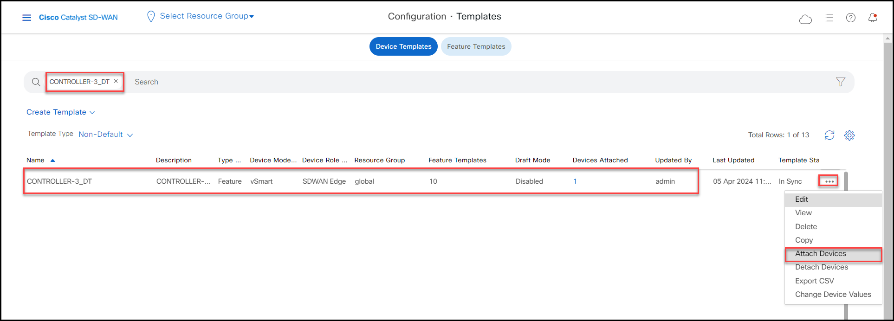
- Select Controller-4 from Available Devices window move it to Selected Devices window, then click 'Attach' and then 'Next'.

- Configure Devices to push the configuration. This moves Controller-4 to Core region.

Step 4: De-active current Centralized Policy and remove BGP core
As MRF by default makes inte-region connections via core region, the centralized policy configured in flat fabric becomes unnecessary. Let's deactive the current centralized policy and remove the BGP core between borders.
Note
In this lab, no service in the core region hence you will remove the service VPN and BGP in core region.
-
Go to Configuration > Policies and deactivate the current active Centralized Policy OMP_CORE_TLOCS_POLICY
-
Click Deactivate and Deactivate once again.

-
You can remove the BGP core by shutting down the service VPN 10 interfaces on all Hubs that were used for the BGP core. This ensures the inter-region communication uses the Fabric we created at the Core with the Private1 TLOCs.
-
Go to Configuration > Templates > Device Templates; look up for cEDGE_SITE-201_DT device template and now click on Change Device Values.

-
Scroll to the right and mark the checkbox or click on the three dots to shut down the VPN-10_CHILD_IF-1 interfaces on both Border Routers BR-WEST-1 and BR-WEST-2.
-
Click Next and then Configure Devices.

Note
Repeat the same process for cEDGE_SITE-202_DT Device Template to shutdown VPN 10 interfaces on BR-EAST-1 and BR-EAST-2.
Now, Let's verify the connectivity between Site 3000 and Site 6000 from Ubuntu VM and check the path from traceroute.
-
Open mRemoteNG RDP to host Site-3000-VPN-10-Ubun. Ping and trace the Ubuntu host located in Site 6000 with IP 10.60.1.101
-
As we can see below, both are still reachable and the traffic is still going through the Fabric we created in the Core, but now without a such complex Control Policy.
Success
Congratulations, you have fully migrated your overlay from a Regional Hub & Spoke using Control Policy to a Multi-Region Fabric without Control Policy.
Task 7 - MRF Secondary Region
The Secondary Region is a feature within Multi-Region Fabric that provides a direct path between sites in different regions. Depending on the requirements, this path over 2nd region can serve as primary path between sites in different regions, or backup path or ECMP.
In this task you will create a Secondary Region between the West Site 5000 and the East Sites 6000 and 7000 as shown in the diagram below.
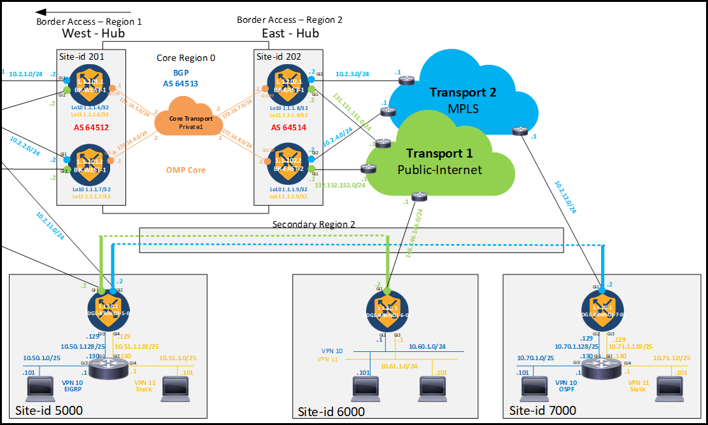
- First, RDP into the Ubuntu Site-5000-VPN-10-Ubun host in Site 5000 using the mRemoteNG client and the ping and trace the IP 10.60.1.101 that lives in Site 6000.

As you can see, it is reachable through the Fabric in the Core now.
Step 1: Create Secondary Region
- Go to Configuration > Network Hierarchy and in Global click on ... and select ‘Add Node’.

- Select the Region Type and name it as SECONDARY-REGION

- Click Add.
Note
As with the primary West and East Region, now this Secondary region has been assigned with the Region ID 3 automatically by the system.
Step 2: Create Transport Interface Feature Templates with Secondary Region
As you can see from the diagram above, the 2nd region will be enabled over both Piblic-Internet and MPLS transports. In this step, you will build two new feature templates for both transport interfaces with 2nd region enabled.
- Go to Configuration > Templates > Feature Templates and look up for the existing cEDGE_SITE-ALL_VPN-0_PUB-INET_IF_FT feature template and click 'Copy' to clone it.
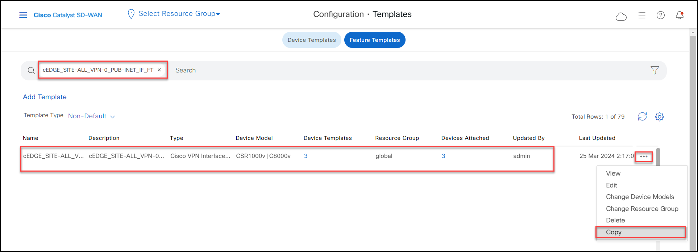
- Name it as cEDGE_SITE-PRI_AND_SEC-REGIONS_VPN-0_PUB-INET_IF_FT and click ‘Copy’

- Now, look up for the template you just created cEDGE_SITE-PRI_AND_SEC-REGIONS_VPN-0_PUB-INET_IF_FT and edit it.
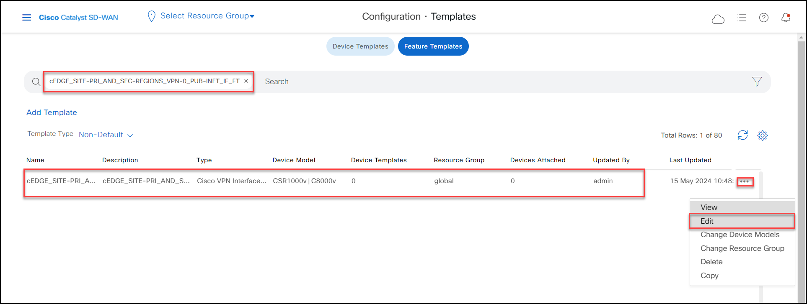
- Go to the Tunnel section and under ‘Advanced Options’, enable ‘Secondary Region’ as Shared Between Primary and Secondary Regions and click ‘update’.

-
Click 'Update'.
-
Go to Configuration > Templates > Feature and look up for the existing cEDGE_SITE-ALL_VPN-0_MPLS_IF_FT feature template to clone it.
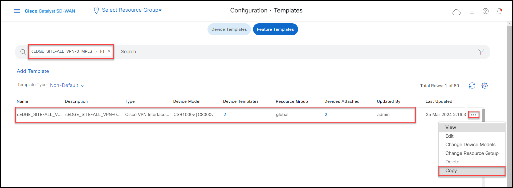
- Name it as cEDGE_SITE-PRI_AND_SEC_REGIONS_VPN-0_MPLS_IF_FT
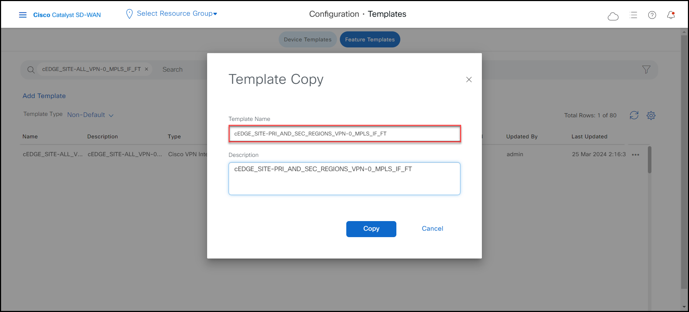
-
Click ‘Copy’.
-
Now, look up again for the template you just created cEDGE_SITE-PRI_AND_SEC_REGIONS_VPN-0_MPLS_IF_FT and edit it.

- Define the Interface Name as a variable (this because it will be used for Site7000 that uses a different interface for the MPLS TLOC).

- Go to the ‘Tunnel’ section and under ‘Advanced Options’, enable ‘Secondary Region’ as Shared Between Primary and Secondary Regions

- Click 'Update'.
Step 3: Create an OMP Feature Template to influenciate the OMP Best Path Algorithm
By default, the path over 2nd region is prefered shorter path, because it provides the direct path for sites in different region. In this step, you will change this default behavior to allow equal cost multi path over direct path and core region path.
-
Go to Configuration > Templates > Feature and let’s copy now the existing cEDGE_ALL_OMP_FT feature template.
-
Name it as cEDGE_OMP_PRI_AND_SEC_REGIONS_FT
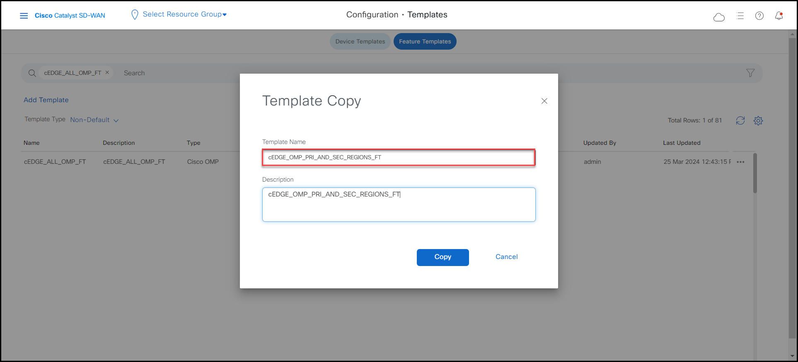
-
Click ‘Copy’.
-
Once created it look up for cEDGE_OMP_PRI_AND_SEC_REGIONS_FT and edit it.

- Go to the ‘Best Path’ section, and make Global on to enable the Ignore Region-Path Length During Best-Path Algorithm parameter, then click ‘update’.
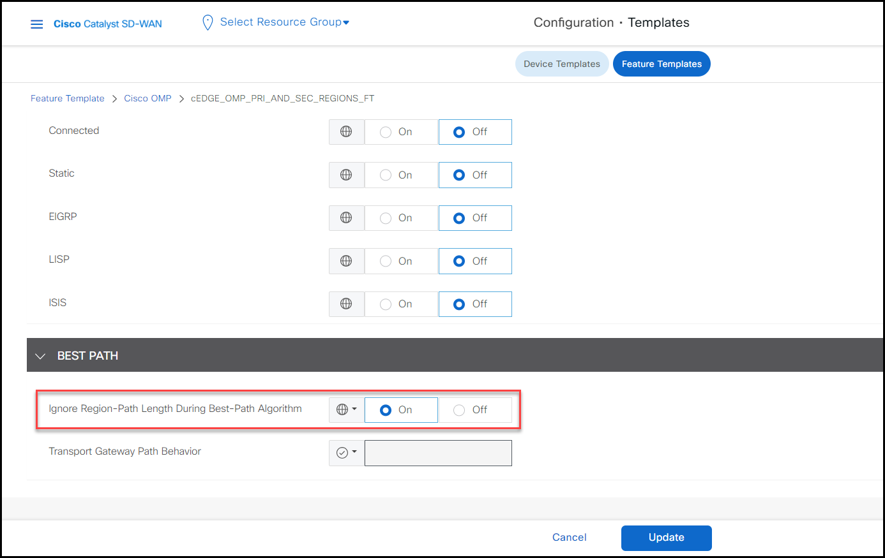
- Click 'Update'.
Info
The default value is Off, and by default, OMP gives preference to a direct tunnel path over a hierarchical path because the direct path has fewer hops.
Note
With this configuration, we disable the comparison of the number of hops, OMP applies equal-cost multi-path routing (ECMP) to all routes, and packets can use all available paths.
Step 4: Enable Secondary Region for Site 5000
In this step, you will update the device templates and enable Secondary Region on Site 5000.
-
Modify the Cisco System Feature template currently used by the Site 5000 edge router to participate in the secondary.
-
Go Configuration > Templates > Feature and look up for the cEDGE_EDGE-WEST_SYSTEM_FT and click ‘Copy’
-
Name it as cEDGE_PRI_AND_SEC_REGIONS-WEST_SYSTEM_FT.
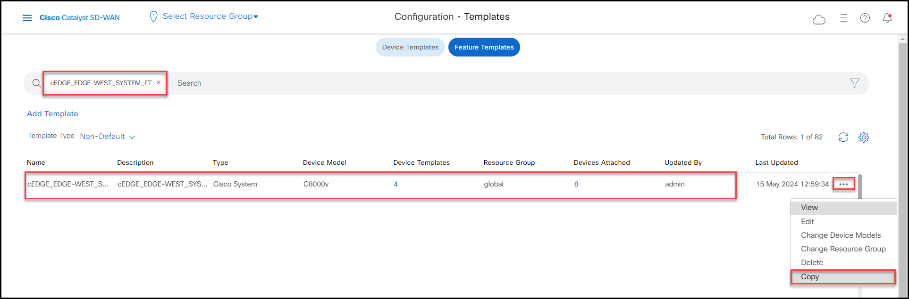
- Click ‘Copy’.

- Look up for the cEDGE_PRI_AND_SEC_REGIONS-WEST_SYSTEM_FT feature template you just created and click ‘Edit’

- Make Global on the ‘Secondary Region’ parameter and select SECONDARY-REGION from the dropdown menu.

-
Click ‘Update’ to save the changes.
-
Go to Configuration > Templates > Device Templates look up for the cEDGE_SITE-5000_DT device template and edit it.
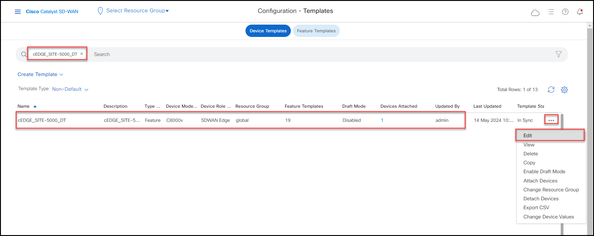
- In the ‘Cisco System’ section, select the feature template we previously created named cEDGE_PRI_AND_SEC_REGIONS-WEST_SYSTEM_FT

- Under the ‘Cisco OMP’ section, select the cEDGE_OMP_PRI_AND_SEC_REGIONS_FT feature template we created in step 3.

- Under the ‘Transport & Management VPN’ section, change the two Cisco VPN Interface Ethernet feature templates to the ones created in step 1 named cEDGE_SITE-PRI_AND_SEC-REGIONS_VPN-0_PUB-INET_IF_FT and cEDGE_SITE-PRI_AND_SEC_REGIONS_VPN-0_MPLS_IF_FT respectively.
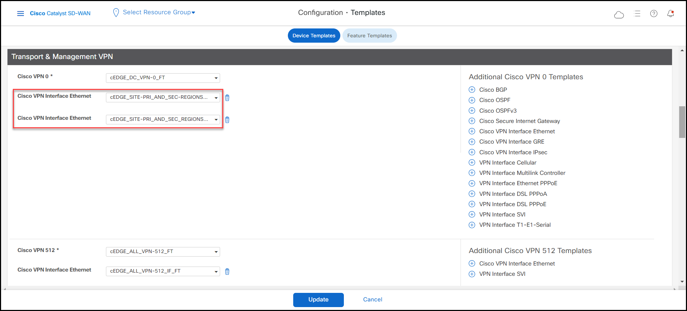
- Finally, click ‘Update’, and fill out the two new variables with GigabitEthernet2 and 10.2.11.2/24 as shown below.
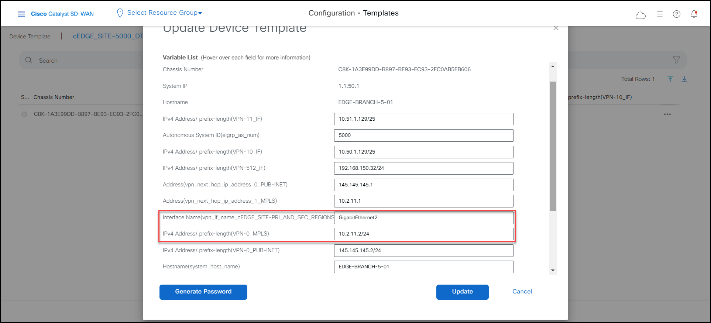
- Click ‘Update’ and you should see in the ‘Config Diff’ section all the next lines in green color being pushed to the device if you scroll down.
 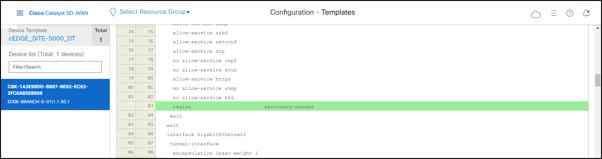
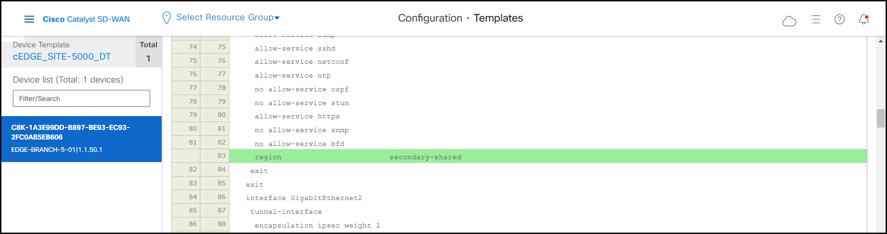


- After compare the diff, click ‘Configure Devices’ to push configuration.
Step 5: Enable Secondary Region for Site 6000 and 7000
In this step, you will update the device templates and enable Secondary Region on Site 6000 and site 7000. Again, for simplicity, let’s copy the ‘System’ Feature template currently used by the Site 6000 and site 7000 to participate in the secondary.
- Go to Configuration > Templates > Feature; look up for the cEDGE_EDGE-EAST_SYSTEM_FT and click ‘Copy’.

- Name it cEDGE_PRI_AND_SEC_REGIONS-EAST_SYSTEM_FT

- Look up for cEDGE_PRI_AND_SEC_REGIONS-EAST_SYSTEM_FT feature template you just created and click ‘Edit’.

- Make Global on the ‘Secondary Region’ parameter and select SECONDARY-REGION from the dropdown menu.

-
Click ‘Update’.
-
Update device template for Site 6000
-
Go to Configuration > Templates > Device Templates; look up for the cEDGE_SITE-6000_DT device template and edit it.
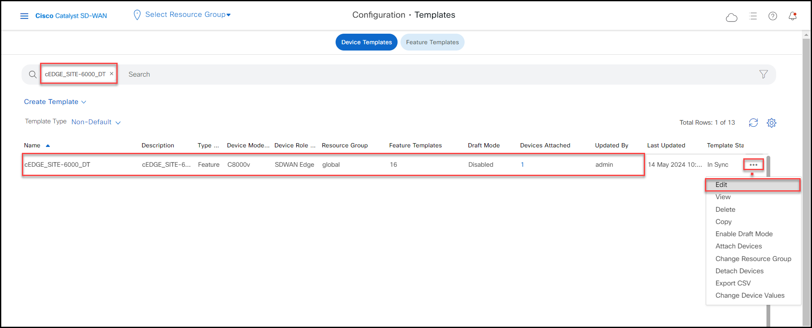
- Under ‘Cisco System' section select the feature template cEDGE_PRI_AND_SEC_REGIONS-EAST_SYSTEM_FT.

- Under ‘Cisco OMP’ section, select the cEDGE_OMP_PRI_AND_SEC_REGIONS_FT feature template.

- Under the ‘Transport & Management VPN’ section, change the two Cisco VPN Interface Ethernet feature templates to the ones created in step 2 named cEDGE_SITE-PRI_AND_SEC-REGIONS_VPN-0_PUB-INET_IF_FT

-
Click ‘Update’, then ‘Next’.
-
You should see the all the next lines in green color in the ‘Config Diff’ being pushed to the device if you scroll down.
 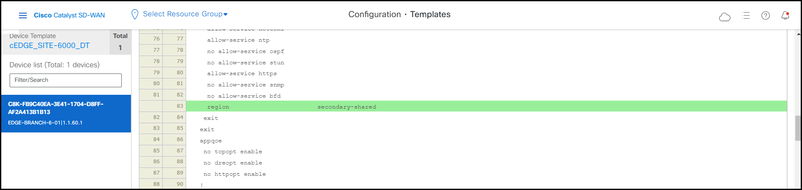
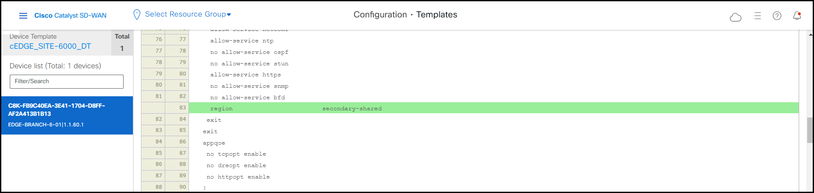

-
Click ‘Configure Devices’ to push the configuration after compare the diff.
-
Let’s repeat the same process to update device template for Site 7000.
-
Go to Configuration > Templates > Device Templates; look up for the cEDGE_SITE-7000_DT device template and edit.

- Under ‘Cisco System’ section select the cEDGE_PRI_AND_SEC_REGIONS-EAST_SYSTEM_FT feature template.
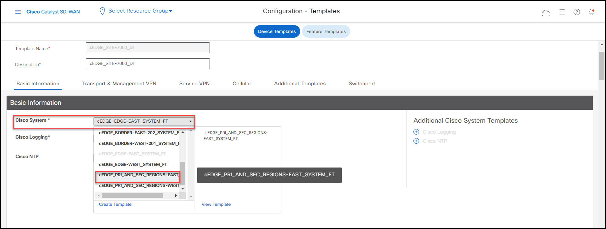
- Under the ‘Cisco OMP’ section, select the cEDGE_OMP_PRI_AND_SEC_REGIONS_FT feature template.

- Under the ‘Transport & Management VPN’ section, change the two Cisco VPN Interface Ethernet feature templates to the ones created in step 2 named cEDGE_SITE-PRI_AND_SEC_REGIONS_VPN-0_MPLS_IF_FT.

- Click ‘Update’, and fill out the two new variables with GigabitEthernet1 and 10.2.12.2/24 as shown below.

- Click ‘Update’ and you should see in the ‘Config Diff’ section all the next lines in green color being pushed to the device if you scroll down.
 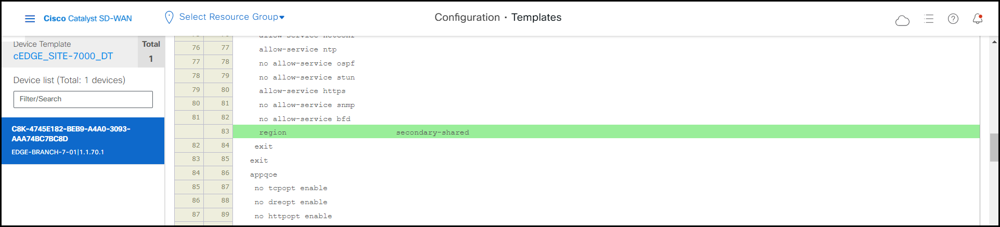
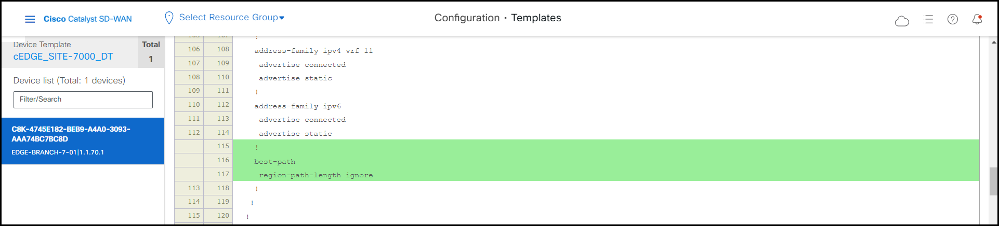
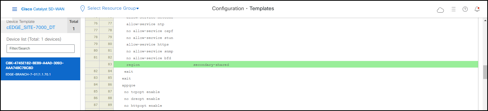
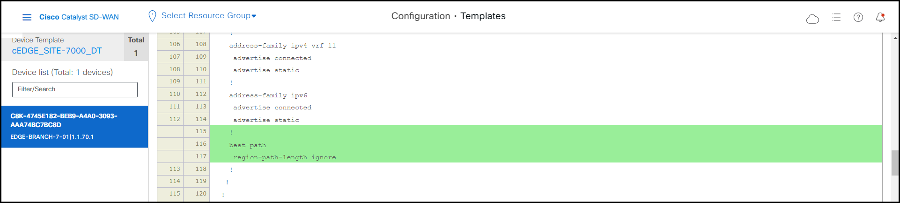
- After compare the diff, click ‘Configure Devices’ to push configuration.
Step 6: Make Controller-3 Secondary Region-aware and Validate
Sites Site 5000, Site 6000 and Site 7000 have been configured to participate in the SECONDARY-REGION (3). However there is no controller for secondary region yet.
In this step, you will configure Controller-3 (1.1.1.5) for secondary region.
- Go to Configuration > Templates > Feature Templates and look up for the CONTROLLER-3_SYSTEM_FT feature template and edit it.

- In the ‘Region ID List’ parameter, add the SECONDARY-REGION to serve this region besides the Core Region.

- Click ‘Update’, then ‘Next’ and you should see the next in the ‘Config Diff’.

- Click ‘Configure Devices’ to push the configuration.
Now, Site 5000 has connectivity to Site 6000 and Site 7000, and vice versa, through the Core Fabric and the Direct Path over the secondary region.
Because you enabled ‘Ignore Region-Path Length During Best-Path Algorithm’ on the new OMP template in step 1, the system uses ECMP over all available paths, including the direct path and the path over the core region. This is beneficial in use cases where the requirement is to send non-critical traffic using lower-cost WAN links instead of the optimized middle-mile WAN or PAYG links in the core region.
-
Let's verify this from SDWAN manager.
-
Go to Monitor > Devices > EDGE-BRANCH-5-01

- Select Troubleshooting from the navigation panel on the left and then select Simulate Flows
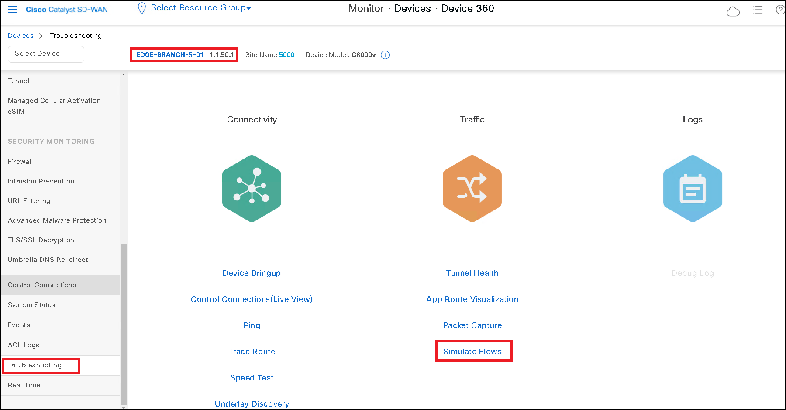
- In the Simulate Flows window, enter the following parameters for simulated flow.
- VPN : VPN- 10
- Source/Interface for VPN - 10: GigabitEthernet3
- Source IP: 10.50.1.129
- Destination IP: 10.60.1.101
- Click Simulate, and you should see output similar to the screenshot below.
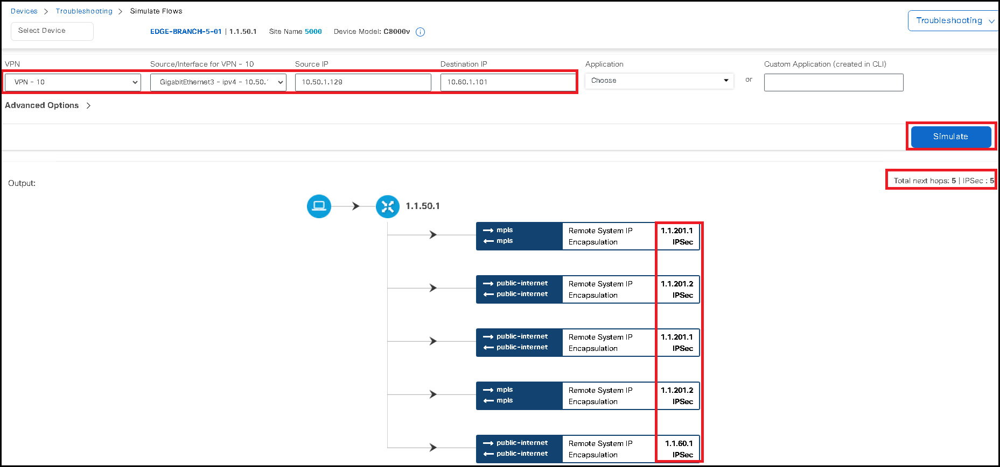
-
As you can see the output from simulated flow, there are multiple paths available from site 5000 to site 6000. You can try different IPs in site 6000 and or site 7000 and see what is the output.
-
We can also confirm this from CLI.
- Go to the mRemoteNG client and SSH into the EDGE-BRANCH-5-01 and then issue the command show ip route vrf 10.

- As we can see from the output, all prefixes from the East Region have 3 TLOCs IP pointing to, two being through the West Border routers, and one being the Originator TLOC IP for the direct path.
Task 8 - MRF Central Policy
Another use case for secondary region is to set different preference for different VPNs.
In this task you will create a Multi-Region Fabric (MRF) Control Policy that will steer VPN 11 traffic through the direct path over the Secondary Region while all other VPN 10 traffic will ECMP through all paths.
Step 1: Create a New Control Policy
- Go to Configuration > Policies > Add Policy
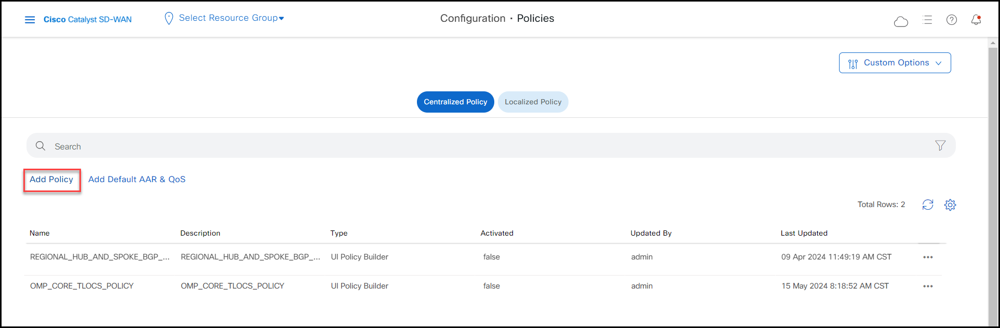
- On the left-side pane from the first section, select Region and then click ‘New Region List’
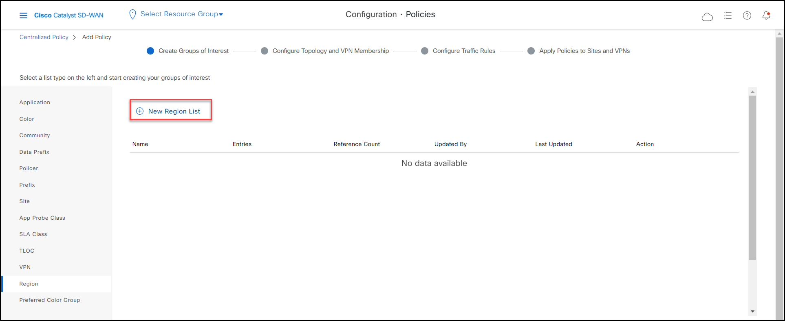
- Name this Region List as ACCESS with the regions 1,2.
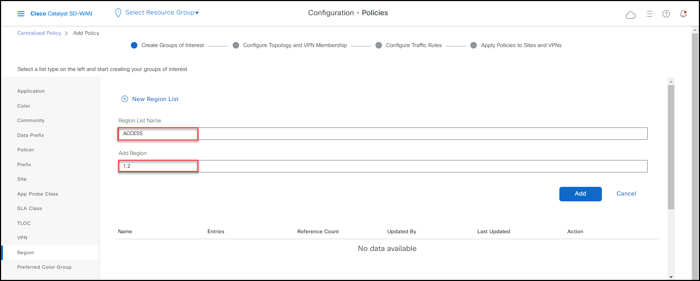
-
Click ‘Add’.
-
Also, let’s create a Site List, so click on the left-side pane ‘Site’ and then ‘+ New Site List’.

- Name it as SECONDARY_REGION_SITES with the Sites 5000,6000,7000

-
Click ‘Add’ and then ‘Next’.
-
Now, click Add Topology and select Custom Control (Route & Tloc)

- Name this Control Policy as MRF_CP.
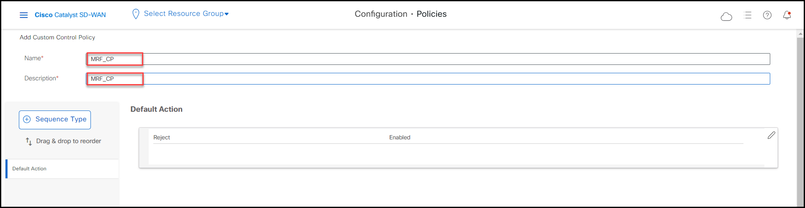
- Click ‘+ Sequence Type’ and then select ‘TLOC’

- Next, click on ‘+ Sequence Rule’, and select ‘Actions’ and finally enable ‘Accept’
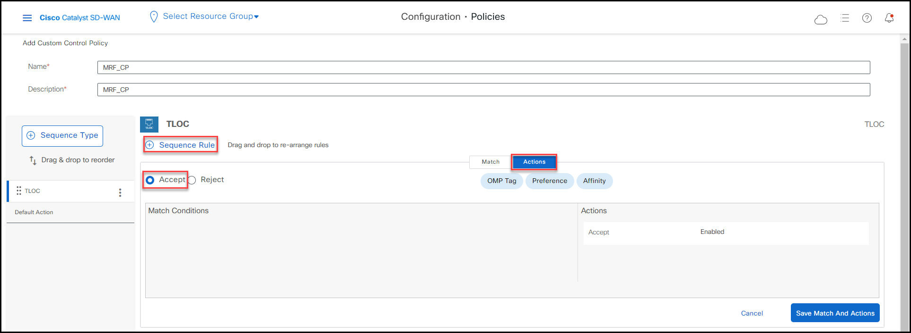
-
Click ‘Save Match and Actions’.
-
Now, again click ‘+ Sequence Type’, but this time select ‘Route’
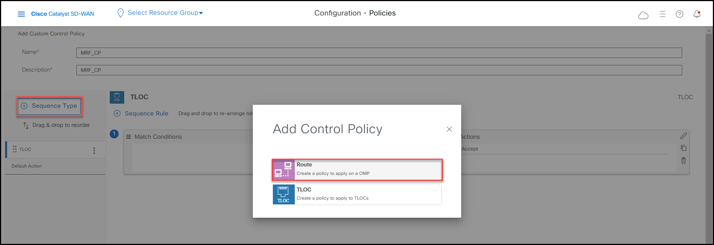
- Click on ‘+ Sequence Rule’, and under the ‘Match’ section, select ‘Region’ with the Region List ACCESS

- Also, add a match for ‘VPN’ for VPN ID 11
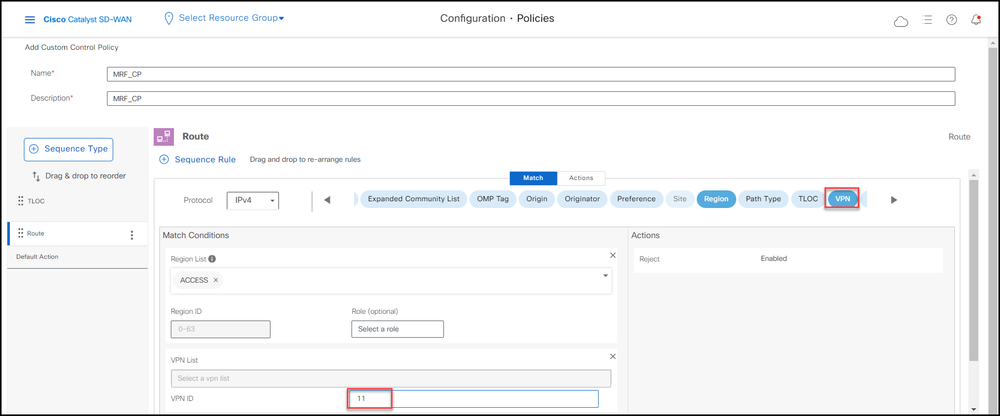
- Next, add one more match for ‘Path Type’ and select HIERARCHICAL
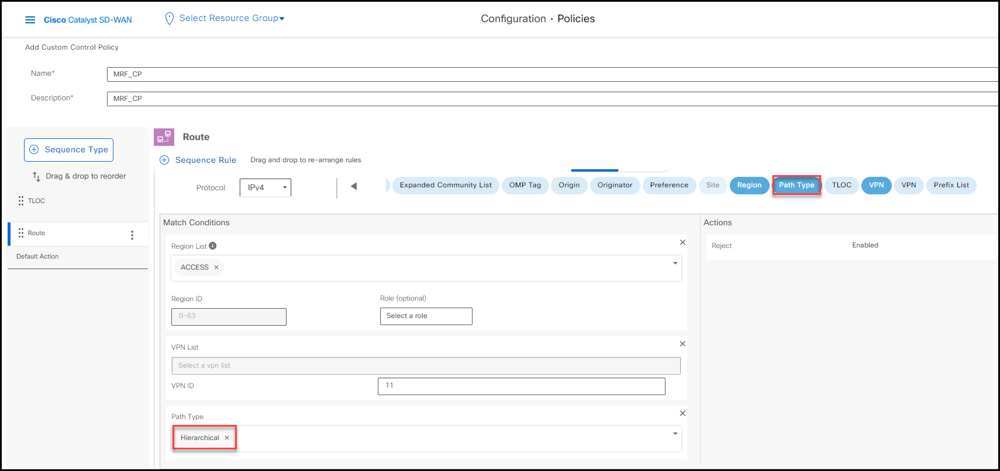
- Click ‘Actions’ and leave the ‘Reject’ option enabled.
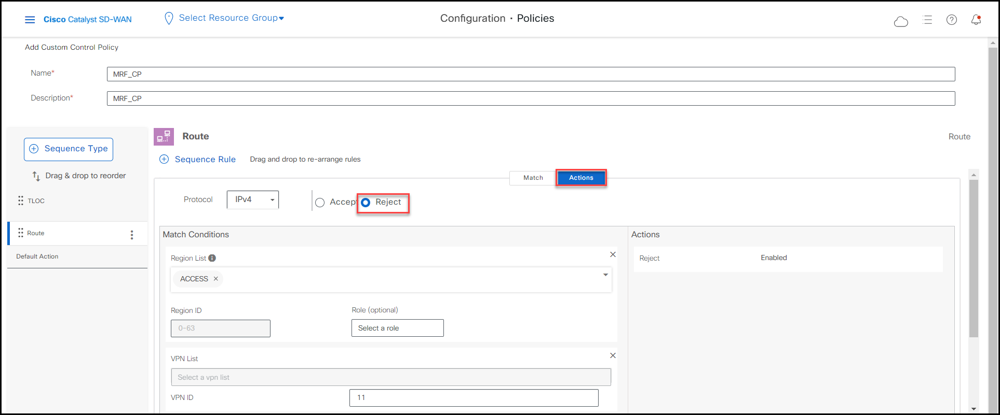
-
Click 'Save Match and Actions'
-
Click ‘+ Sequence Rule’ to add another rule, and do not select any match.
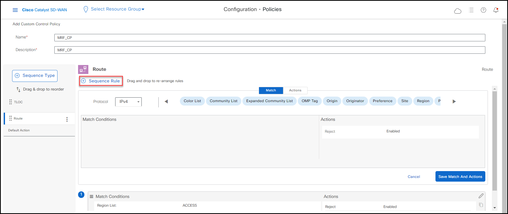
- Next, click ‘Actions, and enable ‘Accept’.
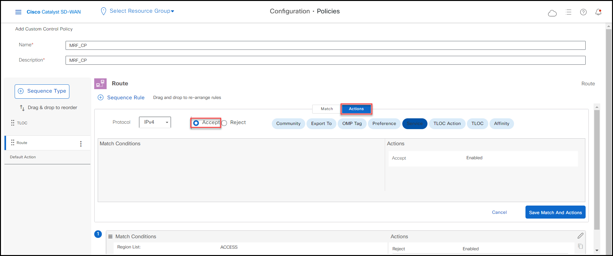
-
Click ‘Save Match and Actions’.
-
Finally, click ‘Save Control Policy’.
-
You will be returned to the next ‘Configure Topology and VPN Membership’ where now we can see the Control Policy we just created.

-
Click ‘Next’, and ‘Next’ once again till you get to the ‘Apply Policies to Sites and VPNs’ section.
-
Name this Centralized Policy as MRF_POLICY, then click ‘+ New Site/Region List’ and enable ‘Region’ with ACCESS as the Outbound Region List as follows.
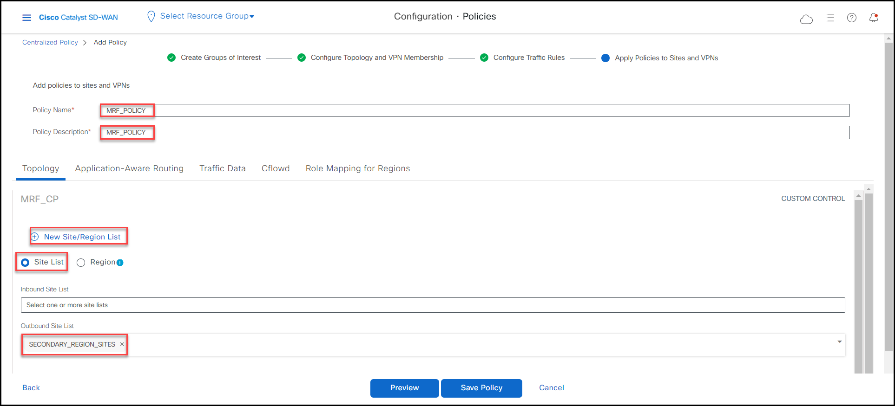
- Click 'Add'.
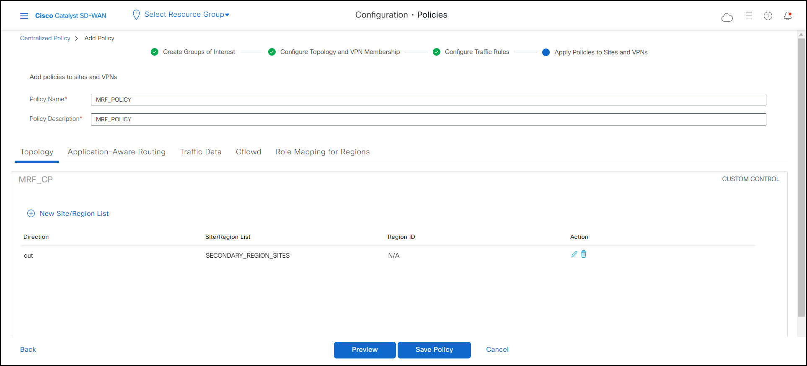
- Finally click ‘Save Policy’.
Step 2: Understand, Activate and Confirm MRF Policy
- Before we activate this new MRF Policy, go to Configuration > Policies and click ‘Preview’ on the MRF_POLICY policy we just created

- The goal of the MRF Control Policy is to prevent the advertisement of prefixes from Access Regions 1 and 2 with a hierarchical path and to limit the prefixes from VPN 11 to Sites 5000, 6000, and 7000 only.Try to understand the policy from preview.

This is a good use-case example where we want VPN 10, which carries our critical corporate traffic, to use the Core or the direct path with ECMP. At the same time, we want to route our Guest Traffic in VPN 11 through the direct path only at these sites with Secondary Regions, without affecting the rest of the access sites. This approach aims to reduce costs and bandwidth usage at the Core.
- Activate the Policy the MRF_POLICY we just created.
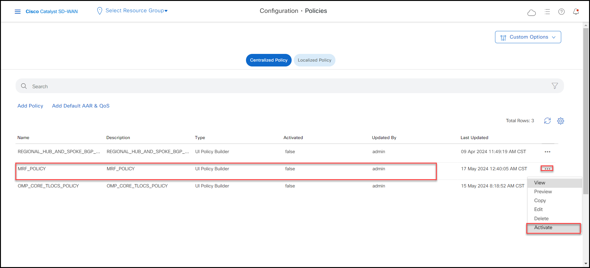
-
Click ‘Activate’ and ‘Activate’ once again.
-
Now, SSH into EDGE-BRANCH-5-01 and issue the show command show ip route vrf 10.

-
As we can see on the output above, we do have all prefixes from the East Region using all paths available for ECMP, being through the Core or through the Direct Path.
-
Now, run the show command show ip route vrf 11

-
As shown above, for VPN 11, communication to the East Region is now only possible using the direct path as defined in the MRF Policy.
-
You can verify by running a trace from the Site-5000-VPN-10-Ubun Ubuntu host to the 10.60.1.101 that's in service VPN 10 of Site 6000.
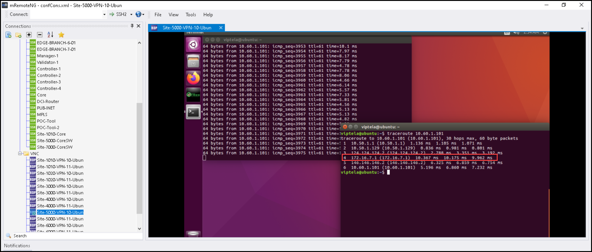
-
Because the ECMP hash, the traffic is going through the Core but it may go through the Direct Path as well.
-
Finally, let’s verify by running a trace from the Site-5000-VPN-11-Ubun Ubuntu host to the 10.61.1.101 that lives in service VPN 11 of Site 6000.

Success